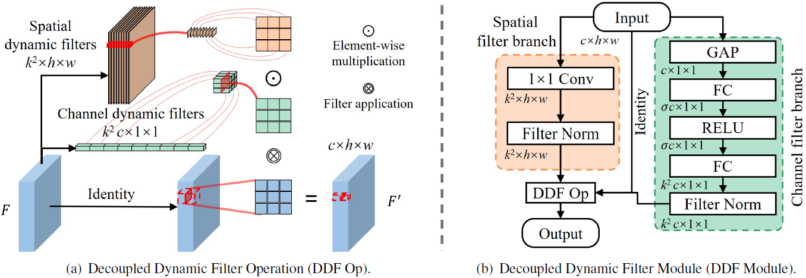

Paper and Supplementary Material

Generative View Synthesis: From Single-view Semantics to Novel-view Images
Arxiv Preprint, 2020. Link
|
|
|
|
|
|
|
Convolution is one of the basic building blocks of CNN architectures. Despite its common use, standard convolution has two main shortcomings:
Content-agnostic and Computation-heavy. Dynamic filters are content-adaptive, while further increasing the computational overhead.
Depth-wise convolution is a lightweight variant, but it usually leads to a drop in CNN performance or requires a larger number of channels.
In this work, we propose the Decoupled Dynamic Filter (DDF) that can simultaneously tackle both of these shortcomings.
Inspired by recent advances in attention, DDF decouples a depth-wise dynamic filter into spatial and channel dynamic filters.
This decomposition considerably reduces the number of parameters and limits computational costs to the same level as depth-wise convolution.
Meanwhile, we observe a significant boost in performance when replacing standard convolution with DDF in classification networks.
ResNet50 / 101 get improved by 1.9% and 1.3% on the top-1 accuracy, while their computational costs are reduced by nearly half.
Experiments on the detection and joint upsampling networks also demonstrate the superior performance of the DDF upsampling variant
(DDF-Up) in comparison with standard convolution and specialized content-adaptive layers.
|
|  |
|
|
Tewodros Habtegebrial, Varun Jampani, Orazio Gallo, Didier Stricker. Generative View Synthesis: From Single-view Semantics to Novel-view Images Arxiv Preprint, 2020. Link |
| References |
| [1] SPADE: Semantic Image Synthesis with Spatially-Adaptive Normalization, Park et al. link |
| [2] SM: Stereo Magnification: Learning View Synthesis using Multiplane Images, Zhou et al. link |
| [3] CVS: Monocular Neural Image Based Rendering with Continuous View Control, Chen et al. link |
|
We thank the SDS department at DFKI Kaiserslautern, for their support with GPU infrastructure. The template for this website is borrowed from Richard Zhang. |